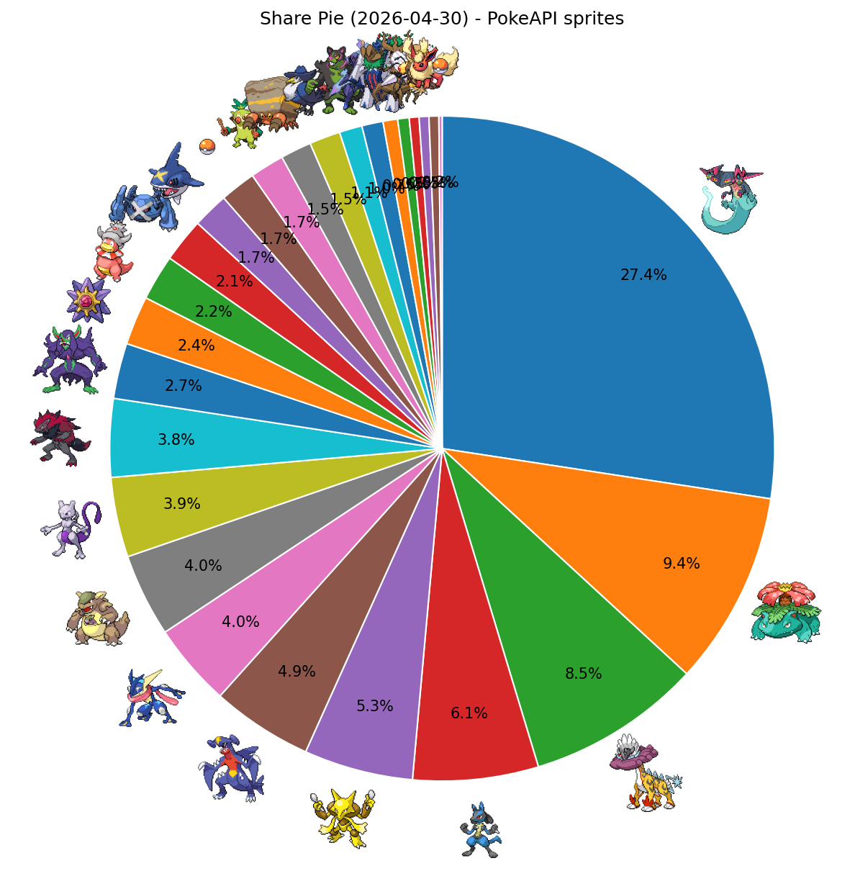
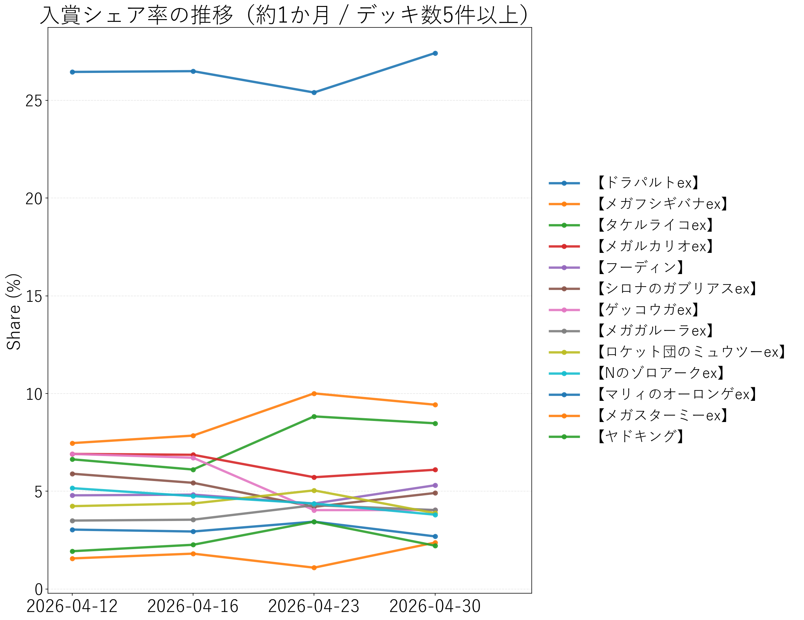

↔ 横スクロール
| 順位 | デッキタイプ | 入賞数 | シェア |
|---|---|---|---|
| 1 | 【ドラパルトex】 | 346 | 27.42% |
| 2 | 【メガフシギバナex】 | 119 | 9.43% |
| 3 | 【タケルライコex】 | 107 | 8.48% |
| 4 | 【メガルカリオex】 | 77 | 6.10% |
| 5 | 【フーディン】 | 67 | 5.31% |
| 6 | 【シロナのガブリアスex】 | 62 | 4.91% |
| 7 | 【ゲッコウガex】 | 51 | 4.04% |
| 8 | 【メガガルーラex】 | 51 | 4.04% |
| 9 | 【ロケット団のミュウツーex】 | 49 | 3.88% |
| 10 | 【Nのゾロアークex】 | 48 | 3.80% |
| 11 | 【マリィのオーロンゲex】 | 34 | 2.69% |
| 12 | 【メガスターミーex】 | 30 | 2.38% |
| 13 | 【ヤドキング】 | 28 | 2.22% |
| 14 | 【ダイゴのメタグロスex】 | 27 | 2.14% |
| 15 | 【メガサメハダーex】 | 22 | 1.74% |
| 16 | 【おまつりおんど】 | 21 | 1.66% |
| 17 | 【イワパレス】 | 19 | 1.51% |
| 18 | 【ロケット団のドンカラス】 | 19 | 1.51% |
| 19 | 【イイネイヌ】 | 14 | 1.11% |
| 20 | 【ソウブレイズex】 | 13 | 1.03% |
| 21 | 【ブリジュラスex】 | 9 | 0.71% |
| 22 | 【ホップのオーロット】 | 7 | 0.55% |
| 23 | 【スピアーex】 | 6 | 0.48% |
| 24 | 【テラスタルバレット】 | 6 | 0.48% |
| 25 | 【ブースターex】 | 6 | 0.48% |
| 26 | その他 | 24 | 1.90% |

PokeAPIアイコン付きシェア円グラフ

入賞シェア率の推移